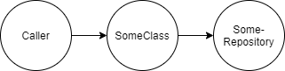
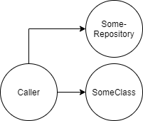

About mocks, testing implementation details, and refactoring towards pure functions
October 10th, 2020
Well written unit tests make it easier to safely change the code. Poorly written unit tests can make it harder to change the code. These unit tests break when implementation details are changed. Often, this is because they test implementation details of the code under test, rather than its input and output. Therefore, when writing unit tests, avoid testing for implementation details.
How do we avoid testing implementation details? And what does that have to do with mocks?
An example of a unit test that tests for implementation details:
[TestMethod]
public void ExampleTest()
{
// Arrange
var respositoryMock = new Mock();
respositoryMock.Setup(m => m.GetThing("someInput")).Returns("aThing");
var sut = new SomeClass(respositoryMock.Object);
// Act
var result = sut.CreateAThing();
// Assert
Assert.AreEqual("theResult", result);
respositoryMock.Verify(m => m.GetThing("someInput"), Times.Once);
respositoryMock.VerifyNoOtherCalls();
}
Here we inject a mock of a repository into our system-under-test (sut). The mock is set to return a specific result on a specific call. We call the method-under-test on our sut and check if the result is what we expect. Makes sense, right?.
Look at the respositoryMock.Setup line. How do we know the GetThing() method on the repository will be called with "someInput"? That is inside knowledge of the method-under-test. The unit test should not have this knowledge.
Also, look at the respositoryMock.Verify lines. Yes, it would be unexpected if the GetThing() method would be called more than once. Also, we don't expect any other calls on the mock. Still, it is not the place of the unit test to check for these type of things.
The dependencies flow like this:
If we ever want to change the interaction between SomeClass and the SomeRepository class, we will have to change this unit test too. Do we really want SomeClass and SomeRepository to change together?
This is a relative benign example. But imagine there are more mocks, and a more complex flow. Then it may be much harder to untangle the unit tests from the implementation when we make a change.
Can we rewrite the code to not use mocks? Yes, we can:
[TestMethod]
public void AnotherExampleTest()
{
// Arrange
var sut = new SomeClass();
// Act
var result = sut.CreateAThing("aThing");
// Assert
Assert.AreEqual("theResult", result);
}
Almost seems like cheating, right?
By passing the result from the SomeRepository.GetThing() method into our method-under-test, instead of passing an instance of the class, we made our unit test much simpler. We have made the method-under-test a pure function. Of course, the responsibility of calling the SomeRepository and passing the result of the GetThing() method into the SomeClass.CreateAThing() method has moved to the caller. Nothing is for free. But this allows our method-under-test to focus on knowing how to CreateAThing, rather than also knowing the details of another class that it has to call to use its output.
The code in the caller will look like this:
...
var aThing = someRepository.GetThing("someInput");
var result = someClass.CreateAThing(aThing);
...
The dependencies now flow like this:
When we unit test that calling class, we may still end up using mocks. But if you consistently move dependencies up to the calling class, you will see that eventually all the dependencies end up in one type of class. That is fine, because it is the responsiblity of such a class to know the details of those dependencies and how they should interact. When the details of and the interactions between those dependencies change, the number of places where changes have to be made will be much more limited. And that makes it easier to change the implementations of classes, without unit tests breaking.